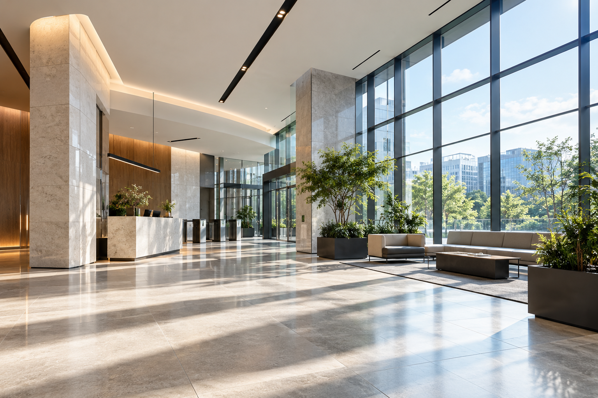
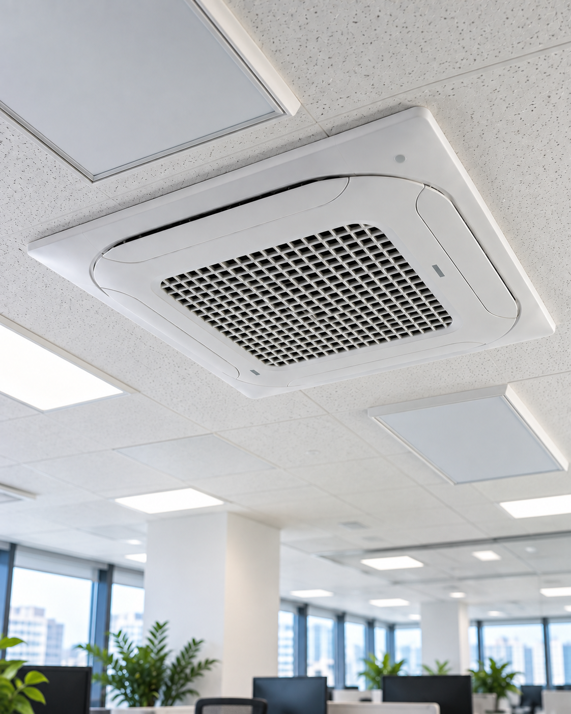

01
 REGULAR CLEANING
REGULAR CLEANING
정기청소
사무실 · 병원 · 학원 · 상가 · 건물 등 공간의 이용 환경에 맞춰 정기적인 청소 서비스를 제공합니다.

PURURUN FACILITY CARE
정기적인 공간 관리부터 전문 청소까지.
사무실 · 병원 · 학원 · 상가 · 건물의
깨끗한 환경을 관리합니다.
쾌적한 업무환경을 위한 정기관리
공간 특성을 고려한 위생관리
꾸준한 관리가 필요한 공용공간
OUR SERVICE
REGULAR CLEANING
사무실 · 병원 · 학원 · 상가 · 건물 등 공간의 이용 환경에 맞춰 정기적인 청소 서비스를 제공합니다.

AIR CONDITIONER벽걸이부터 스탠드, 천장형, 시스템에어컨까지 분해 세척과 전문 관리를 제공합니다.
사무실 · 상가 · 건물 · 가정 등 공간과 창호 환경에 맞는 유리 청소를 진행합니다.
PURURUN MANAGEMENT
단순히 작업을 완료하는 것보다 깨끗한 상태가 지속적으로 유지되는 것이 중요합니다. 푸르른은 현장의 특성과 이용 환경을 파악하고 작업 기준을 설정하여 지속적으로 품질을 관리합니다.
공간의 용도와 이용 환경, 필요한 관리 범위를 확인합니다.
현장 특성에 맞는 작업 범위와 관리 기준을 설정합니다.
계획된 관리 기준에 따라 필요한 작업을 진행합니다.
작업이 기준에 맞게 진행되었는지 결과를 확인합니다.
관리 상태를 확인하고 개선이 필요한 부분을 점검합니다.
정기적인 관리를 통해 공간의 청결 품질을 유지합니다.
QUALITY CONTROL
 CHECK LIST
CHECK LIST
현장별 작업 기준을 정하고 필요한 관리 항목을 확인합니다.
 WORK PHOTO
WORK PHOTO
작업 완료 후 현장 상태와 필요한 사항을 확인합니다.
 MANAGEMENT RECORD
MANAGEMENT RECORD
지속적인 품질관리를 위해 현장의 관리 내용을 기록합니다.
PROJECT
실제 작업사례를 정리하고 있습니다.
준비된 작업사례는 순차적으로 업데이트됩니다.
WHY PURURUN
공간의 용도와 이용 환경을 고려하여 필요한 작업 범위를 설정합니다.
현장별 관리 기준을 설정하여 일관된 품질을 유지합니다.
정기적인 확인을 통해 관리 상태를 점검하고 필요한 부분을 개선합니다.
사무실부터 병원 · 학원 · 상가 · 건물까지 다양한 환경에 맞춰 대응합니다.
ABOUT PURURUN
푸르른은 다양한 공간에 필요한 청소 서비스를 제공하고,
지속적인 품질관리를 통해 깨끗한 환경이
유지될 수 있도록 관리합니다.